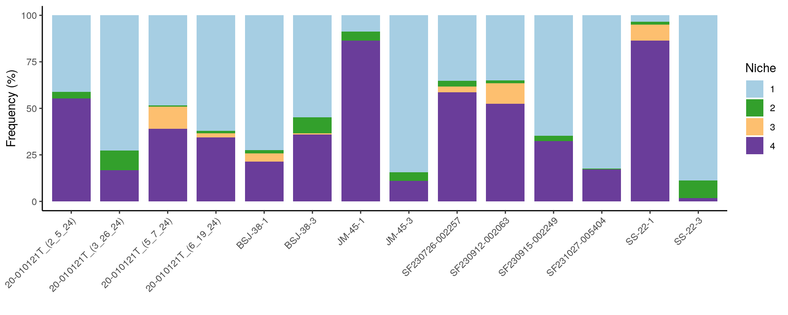
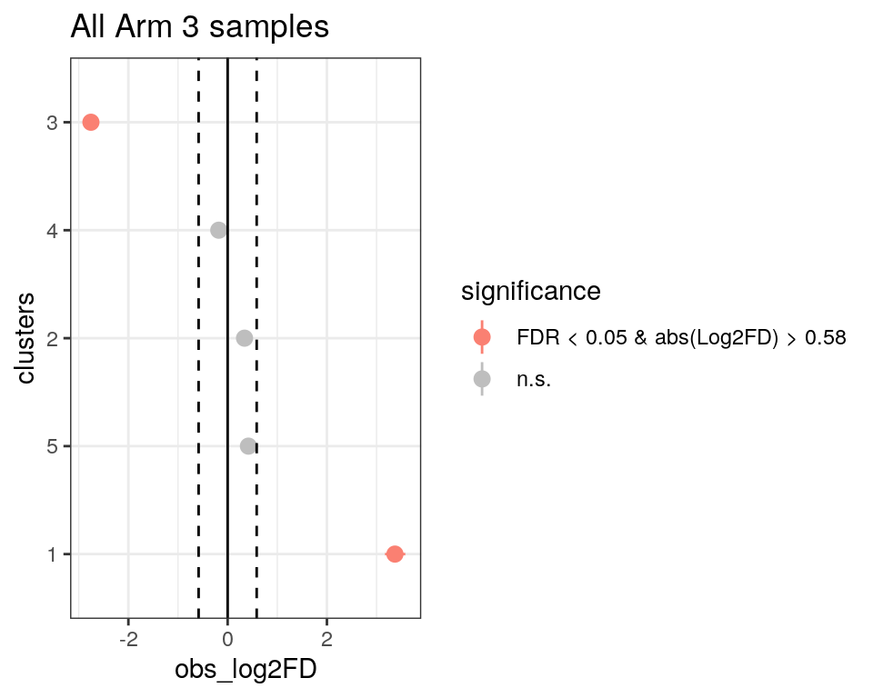
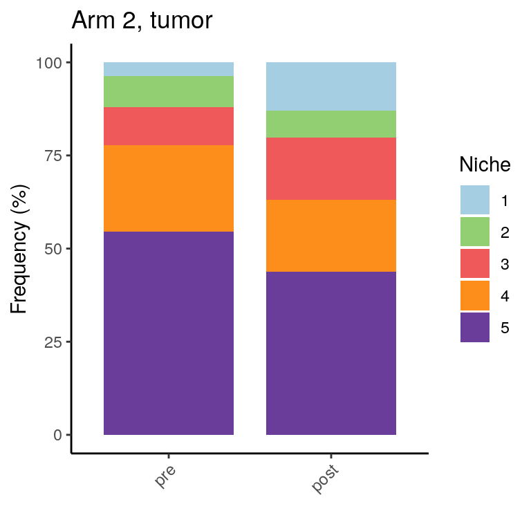

Niche construction and analysis of PIPAC Xenium data
heinin
2025-02-11
Last updated: 2025-06-09
Checks: 5 2
Knit directory: PIPAC_spatial/
This reproducible R Markdown analysis was created with workflowr (version 1.7.1). The Checks tab describes the reproducibility checks that were applied when the results were created. The Past versions tab lists the development history.
The R Markdown file has unstaged changes. To know which version of
the R Markdown file created these results, you’ll want to first commit
it to the Git repo. If you’re still working on the analysis, you can
ignore this warning. When you’re finished, you can run
wflow_publish to commit the R Markdown file and build the
HTML.
Great job! The global environment was empty. Objects defined in the global environment can affect the analysis in your R Markdown file in unknown ways. For reproduciblity it’s best to always run the code in an empty environment.
The command set.seed(20240917) was run prior to running
the code in the R Markdown file. Setting a seed ensures that any results
that rely on randomness, e.g. subsampling or permutations, are
reproducible.
Great job! Recording the operating system, R version, and package versions is critical for reproducibility.
Nice! There were no cached chunks for this analysis, so you can be confident that you successfully produced the results during this run.
Using absolute paths to the files within your workflowr project makes it difficult for you and others to run your code on a different machine. Change the absolute path(s) below to the suggested relative path(s) to make your code more reproducible.
| absolute | relative |
|---|---|
| /home/hnatri/PIPAC_spatial/ | . |
| /home/hnatri/PIPAC_spatial/code/PIPAC_colors_themes.R | code/PIPAC_colors_themes.R |
| /home/hnatri/PIPAC_spatial/code/plot_functions.R | code/plot_functions.R |
Great! You are using Git for version control. Tracking code development and connecting the code version to the results is critical for reproducibility.
The results in this page were generated with repository version 3bbda19. See the Past versions tab to see a history of the changes made to the R Markdown and HTML files.
Note that you need to be careful to ensure that all relevant files for
the analysis have been committed to Git prior to generating the results
(you can use wflow_publish or
wflow_git_commit). workflowr only checks the R Markdown
file, but you know if there are other scripts or data files that it
depends on. Below is the status of the Git repository when the results
were generated:
Ignored files:
Ignored: .RData
Ignored: celltype_markers.tsv
Ignored: immune_cluster_marker_annotations.tsv
Ignored: immune_cluster_marker_annotations_2ndpass.tsv
Ignored: main_cluster_marker_annotations.tsv
Ignored: nonimmune_cluster_marker_annotations.tsv
Ignored: nonimmune_cluster_marker_annotations_2ndpass.tsv
Untracked files:
Untracked: niche_composition_k5_n30.pdf
Untracked: timepoint_celltypeprop_barplot_arm2.pdf
Untracked: timepoint_celltypeprop_barplot_arm3.pdf
Untracked: timepoint_nicheprop_barplot_arm2_arm3.pdf
Unstaged changes:
Modified: analysis/arm3_DEGs.Rmd
Modified: analysis/arm3_comparative_analysis.Rmd
Modified: analysis/feature_expression.Rmd
Modified: analysis/niche_construction.Rmd
Modified: analysis/plot_by_group.Rmd
Modified: annotation_dimplot.pdf
Modified: code/plot_metadata.R
Modified: code/plot_save_pdf.R
Modified: demographics_grid.pdf
Note that any generated files, e.g. HTML, png, CSS, etc., are not included in this status report because it is ok for generated content to have uncommitted changes.
These are the previous versions of the repository in which changes were
made to the R Markdown (analysis/niche_construction.Rmd)
and HTML (docs/niche_construction.html) files. If you’ve
configured a remote Git repository (see ?wflow_git_remote),
click on the hyperlinks in the table below to view the files as they
were in that past version.
| File | Version | Author | Date | Message |
|---|---|---|---|---|
| Rmd | 3bbda19 | heinin | 2025-05-13 | Updated annotations, added feature expression by celltype |
| html | 3bbda19 | heinin | 2025-05-13 | Updated annotations, added feature expression by celltype |
| Rmd | fae8c8a | heinin | 2025-02-18 | Added annotations and basic analysis |
| html | fae8c8a | heinin | 2025-02-18 | Added annotations and basic analysis |
| Rmd | 6448204 | heinin | 2025-02-18 | Added annotations |
Load packages
suppressPackageStartupMessages({
library(workflowr)
library(arrow)
library(Seurat)
library(SeuratObject)
library(SeuratDisk)
library(tidyverse)
library(tibble)
library(ggplot2)
library(ggpubr)
library(ggrepel)
library(googlesheets4)
library(workflowr)
library(patchwork)
library(scProportionTest)})Environment variables and helper functions
setwd("/home/hnatri/PIPAC_spatial/")
set.seed(9999)
options(future.globals.maxSize = 30000 * 1024^2)
options(scipen = 99999)
options(ggrepel.max.overlaps = Inf)
source("/home/hnatri/PIPAC_spatial/code/PIPAC_colors_themes.R")
source("/home/hnatri/PIPAC_spatial/code/plot_functions.R")
# Lineage info
gs4_deauth()
metadata <- gs4_get("https://docs.google.com/spreadsheets/d/1sXXwOreLxjMSUoPt79c6jmaQpluWkaxA5P5HfDsed3I/edit?usp=sharing")
lineage <- read_sheet(metadata, sheet = "Cell type annotations")
# Calling DEGs between two groups for each cell type
get_DEGs <- function(seuratdata, ctvar, celltypes, groupvar, group1, group2){
#message(xx)
DEGlist <- lapply(celltypes, function(xx){
seuratdata$DEGgroup <- seuratdata@meta.data[,ctvar]
data_subset <- subset(seuratdata, subset = DEGgroup == xx)
Idents(data_subset) <- as.character(unlist(data_subset[[groupvar]]))
if (min(table(unlist(data_subset[[groupvar]])))<20){
return(NULL)
}
if (all((c(group1, group2) %in% unlist(data_subset[[groupvar]]) == c(T, T)))){
markers <- FindMarkers(data_subset,
ident.1 = group1,
ident.2 = group2,
assay = "RNA",
verbose = F)
markers$feature <- rownames(markers)
markers[,ctvar] <- xx
return(markers)
} else {
return(NULL)
}
})
as.data.frame(do.call(rbind, DEGlist))
}Import data
seurat_data <- readRDS("/tgen_labs/banovich/PIPAC/Seurat/PIPAC_NC50_NN20_PC20_Seurat_annotated_metadata_niches.rds")
unique(seurat_data$Annotation) [1] "EpiTumor1" "Meso" "M8" "F1" "F3" "L2"
[7] "Mast" "L4" "Stromal2" "Endo1" "L3" "M1"
[13] "M4" "L1" "M2" "M6" "Plasma1" "Plasma3"
[19] "F2" "Endo3" "Peri" "F4" "B1" "L5"
[25] "Plasma2" "M7" "Endo2" "Stromal1" "M5" "B2"
[31] "DC" "M3" "EpiTumor2"Niche construction
See /code/construct_niches.R
Plotting niche composition
plot_list <- lapply(seq(3, 8), function(niche){
niche_column <- paste0("niche_k", niche, "_n30")
niches <- seq(1, niche)
seurat_data@meta.data[,niche_column] <- factor(seurat_data@meta.data[,niche_column],
levels = niches)
create_barplot(seurat_data,
group_var = niche_column,
plot_var = "Annotation",
group_levels = niches,
plot_levels = sort(unique(seurat_data$Annotation)),
plot_colors = pipac_celltype_col,
var_names = c("Frequency (%)", ""),
legend_title = "Cell type")
})
plot_list[[1]]
| Version | Author | Date |
|---|---|---|
| 3bbda19 | heinin | 2025-05-13 |
[[2]]
| Version | Author | Date |
|---|---|---|
| 3bbda19 | heinin | 2025-05-13 |
[[3]]
| Version | Author | Date |
|---|---|---|
| 3bbda19 | heinin | 2025-05-13 |
[[4]]
| Version | Author | Date |
|---|---|---|
| 3bbda19 | heinin | 2025-05-13 |
[[5]]
| Version | Author | Date |
|---|---|---|
| 3bbda19 | heinin | 2025-05-13 |
[[6]]
| Version | Author | Date |
|---|---|---|
| 3bbda19 | heinin | 2025-05-13 |
Plotting by tissue
plot_list <- lapply(seq(3, 8), function(niche){
niche_column <- paste0("niche_k", niche, "_n30")
ct_table <- as.data.frame(table(seurat_data@meta.data[, niche_column], seurat_data$Tissue))
colnames(ct_table) <- c("Niche", "Tissue", "Freq")
ct_table <- spread(ct_table, Niche, Freq)
# Converting to percetange
#ct_table[,2:length(ct_table)] <- (ct_table[,2:length(ct_table)]/rowSums(ct_table[,2:length(ct_table)]))*100
ct_table <- gather(ct_table, Niche, Freq, names(ct_table)[2:length(names(ct_table))], factor_key=TRUE)
ct_table$Tissue <- factor(ct_table$Tissue, levels = c("Normal", "Tumor"))
niches <- seq(1, niche)
niches <- factor(niches, levels = niches)
#niches <- sort(unique(seurat_data@meta.data[, niche_col]))
niche_col <- colorRampPalette(brewer.pal(10, "Paired"))(nb.cols <- length(niches))
names(niche_col) <- levels(niches)
ggplot(ct_table, aes(x = Tissue, y = Freq, fill = Niche)) +
geom_bar(stat="identity", position='stack', width = 0.8) +
scale_fill_manual(name = "Niche", values = niche_col) +
xlab("") +
ylab("Cell count") +
theme_classic() +
theme(axis.text.x = element_text(angle = 45, vjust = 1, hjust=1))
})
plot_list[[1]]
[[2]]
| Version | Author | Date |
|---|---|---|
| 3bbda19 | heinin | 2025-05-13 |
[[3]]
| Version | Author | Date |
|---|---|---|
| 3bbda19 | heinin | 2025-05-13 |
[[4]]
| Version | Author | Date |
|---|---|---|
| 3bbda19 | heinin | 2025-05-13 |
[[5]]
| Version | Author | Date |
|---|---|---|
| 3bbda19 | heinin | 2025-05-13 |
[[6]]
| Version | Author | Date |
|---|---|---|
| 3bbda19 | heinin | 2025-05-13 |
Plotting by sample
plot_list <- lapply(seq(3, 8), function(niche){
niche_column <- paste0("niche_k", niche, "_n30")
niches <- seq(1, niche)
seurat_data@meta.data[,niche_column] <- factor(seurat_data@meta.data[,niche_column],
levels = niches)
niche_col <- colorRampPalette(brewer.pal(10, "Paired"))(nb.cols <- length(niches))
names(niche_col) <- levels(niches)
create_barplot(seurat_data,
plot_var = niche_column,
group_var = "Sample",
plot_levels = niches,
group_levels = sort(unique(seurat_data$Sample)),
plot_colors = niche_col,
var_names = c("Frequency (%)", ""),
legend_title = "Niche")
})
plot_listPlotting by sample, Arm 3 tumors only
arm3_tumor <- subset(seurat_data, subset = Arm == "Arm3" &
Tissue == "Tumor")
plot_list <- lapply(seq(3, 8), function(niche){
niche_column <- paste0("niche_k", niche, "_n30")
niches <- seq(1, niche)
arm3_tumor@meta.data[,niche_column] <- factor(arm3_tumor@meta.data[,niche_column],
levels = niches)
niche_col <- colorRampPalette(brewer.pal(10, "Paired"))(nb.cols <- length(niches))
names(niche_col) <- levels(niches)
create_barplot(arm3_tumor,
plot_var = niche_column,
group_var = "Sample",
plot_levels = niches,
group_levels = sort(unique(arm3_tumor$Sample)),
plot_colors = niche_col,
var_names = c("Frequency (%)", ""),
legend_title = "Niche")
})
plot_list[[1]]
| Version | Author | Date |
|---|---|---|
| 3bbda19 | heinin | 2025-05-13 |
[[2]]
| Version | Author | Date |
|---|---|---|
| 3bbda19 | heinin | 2025-05-13 |
[[3]]
| Version | Author | Date |
|---|---|---|
| 3bbda19 | heinin | 2025-05-13 |
[[4]]
| Version | Author | Date |
|---|---|---|
| 3bbda19 | heinin | 2025-05-13 |
[[5]]
| Version | Author | Date |
|---|---|---|
| 3bbda19 | heinin | 2025-05-13 |
[[6]]
| Version | Author | Date |
|---|---|---|
| 3bbda19 | heinin | 2025-05-13 |
Plotting by sample, Arm 3 tumor adjacent only
arm3_normal <- subset(seurat_data, subset = Arm == "Arm3" &
Tissue == "Normal")
plot_list <- lapply(seq(3, 8), function(niche){
niche_column <- paste0("niche_k", niche, "_n30")
niches <- seq(1, niche)
arm3_normal@meta.data[,niche_column] <- factor(arm3_normal@meta.data[,niche_column],
levels = niches)
niche_col <- colorRampPalette(brewer.pal(10, "Paired"))(nb.cols <- length(niches))
names(niche_col) <- levels(niches)
create_barplot(arm3_normal,
plot_var = niche_column,
group_var = "Sample",
plot_levels = niches,
group_levels = sort(unique(arm3_normal$Sample)),
plot_colors = niche_col,
var_names = c("Frequency (%)", ""),
legend_title = "Niche")
})
plot_list[[1]]
| Version | Author | Date |
|---|---|---|
| 3bbda19 | heinin | 2025-05-13 |
[[2]]
| Version | Author | Date |
|---|---|---|
| 3bbda19 | heinin | 2025-05-13 |
[[3]]
| Version | Author | Date |
|---|---|---|
| 3bbda19 | heinin | 2025-05-13 |
[[4]]
| Version | Author | Date |
|---|---|---|
| 3bbda19 | heinin | 2025-05-13 |
[[5]]
| Version | Author | Date |
|---|---|---|
| 3bbda19 | heinin | 2025-05-13 |
[[6]]
| Version | Author | Date |
|---|---|---|
| 3bbda19 | heinin | 2025-05-13 |
Spatial plots of niches
plot_list <- lapply(seq(3, 8), function(niche){
niche_column <- paste0("niche_k", niche, "_n30")
niches <- seq(1, niche)
niches <- factor(niches, levels = niches)
#niches <- sort(unique(seurat_data@meta.data[, niche_col]))
niche_col <- colorRampPalette(brewer.pal(10, "Paired"))(nb.cols <- length(niches))
names(niche_col) <- levels(niches)
DimPlot(seurat_data,
group.by = niche_column,
cols = niche_col,
reduction = "sp_adj") +
coord_fixed()
})
plot_list[[1]]
| Version | Author | Date |
|---|---|---|
| 3bbda19 | heinin | 2025-05-13 |
[[2]]
| Version | Author | Date |
|---|---|---|
| 3bbda19 | heinin | 2025-05-13 |
[[3]]
| Version | Author | Date |
|---|---|---|
| 3bbda19 | heinin | 2025-05-13 |
[[4]]
| Version | Author | Date |
|---|---|---|
| 3bbda19 | heinin | 2025-05-13 |
[[5]]
| Version | Author | Date |
|---|---|---|
| 3bbda19 | heinin | 2025-05-13 |
[[6]]
| Version | Author | Date |
|---|---|---|
| 3bbda19 | heinin | 2025-05-13 |
Dotplot of cell assignment to niches by celltype
niche_ct_prop <- table(seurat_data$Annotation, seurat_data$niche_k5_n30)
niche_ct_prop <- prop.table(niche_ct_prop, margin = 2)
niche_ct_prop <- niche_ct_prop %>%
as.data.frame()
# Adding lineage
niche_ct_prop$lineage <- mapvalues(niche_ct_prop$Var1,
from = lineage$Annotation,
to = lineage$Lineage)
niche_ct_prop$Var1 <- factor(niche_ct_prop$Var1,
levels = rev(unique(niche_ct_prop$Var1)))
p1 <- ggplot(niche_ct_prop, aes(x = Var2, y = Var1)) +
geom_point(aes(size = Freq,
#color = value,
fill = Var1),
stroke = 0.5,
shape = 21) +
guides(color = FALSE) +
scale_fill_manual(values = pipac_celltype_col) +
theme_bw() +
xlab("") +
ylab("") +
facet_grid(lineage ~ ., scales = "free", space = "free")
# k6
niche_ct_prop <- table(seurat_data$Annotation, seurat_data$niche_k6_n30)
niche_ct_prop <- prop.table(niche_ct_prop, margin = 2)
niche_ct_prop <- niche_ct_prop %>%
as.data.frame()
niche_ct_prop$lineage <- mapvalues(niche_ct_prop$Var1,
from = lineage$Annotation,
to = lineage$Lineage)
niche_ct_prop$Var1 <- factor(niche_ct_prop$Var1,
levels = rev(unique(niche_ct_prop$Var1)))
p2 <- ggplot(niche_ct_prop, aes(x = Var2, y = Var1)) +
geom_point(aes(size = Freq,
#color = value,
fill = Var1),
stroke = 0.5,
shape = 21) +
guides(color = FALSE) +
scale_fill_manual(values = pipac_celltype_col) +
theme_bw() +
xlab("") +
ylab("") +
facet_grid(lineage ~ ., scales = "free", space = "free")
# k7
niche_ct_prop <- table(seurat_data$Annotation, seurat_data$niche_k7_n30)
niche_ct_prop <- prop.table(niche_ct_prop, margin = 2)
niche_ct_prop <- niche_ct_prop %>%
as.data.frame()
niche_ct_prop$lineage <- mapvalues(niche_ct_prop$Var1,
from = lineage$Annotation,
to = lineage$Lineage)
niche_ct_prop$Var1 <- factor(niche_ct_prop$Var1,
levels = rev(unique(niche_ct_prop$Var1)))
p3 <- ggplot(niche_ct_prop, aes(x = Var2, y = Var1)) +
geom_point(aes(size = Freq,
#color = value,
fill = Var1),
stroke = 0.5,
shape = 21) +
guides(color = FALSE) +
scale_fill_manual(values = pipac_celltype_col) +
theme_bw() +
xlab("") +
ylab("") +
facet_grid(lineage ~ ., scales = "free", space = "free")
p1p2p3Niche proportions by timepoint in Arm 3
arm3 <- subset(seurat_data, subset = Arm == "Arm3")
niches <- factor(seq(1, 5), levels = seq(1, 5))
niche_col <- colorRampPalette(brewer.pal(10, "Paired"))(nb.cols <- length(niches))
names(niche_col) <- as.character(niches)
create_barplot(arm3,
plot_var = "niche_k5_n30",
group_var = "Timepoint",
plot_levels = niches,
group_levels = c("0", "6"),
plot_colors = niche_col,
var_names = c("Frequency (%)", ""),
legend_title = "Niche") +
ggtitle("Arm 3, all samples")create_barplot(arm3_tumor,
plot_var = "niche_k5_n30",
group_var = "Timepoint",
plot_levels = niches,
group_levels = c("0", "6"),
plot_colors = niche_col,
var_names = c("Frequency (%)", ""),
legend_title = "Niche") +
ggtitle("Arm 3, tumor")create_barplot(arm3_normal,
plot_var = "niche_k5_n30",
group_var = "Timepoint",
plot_levels = niches,
group_levels = c("0", "6"),
plot_colors = niche_col,
var_names = c("Frequency (%)", ""),
legend_title = "Niche") +
ggtitle("Arm 3, tumor-adjacent")Testing for significance with scProportionTest
prop_test <- sc_utils(arm3)
prop_test <- permutation_test(
prop_test, cluster_identity = "niche_k5_n30",
sample_1 = "0", sample_2 = "6",
sample_identity = "Timepoint")
permutation_plot(prop_test) +
ggtitle("All Arm 3 samples")
prop_test <- sc_utils(arm3_tumor)
prop_test <- permutation_test(
prop_test, cluster_identity = "niche_k5_n30",
sample_1 = "0", sample_2 = "6",
sample_identity = "Timepoint")
permutation_plot(prop_test) +
ggtitle("Arm 3 tumors")prop_test <- sc_utils(arm3_normal)
prop_test <- permutation_test(
prop_test, cluster_identity = "niche_k5_n30",
sample_1 = "0", sample_2 = "6",
sample_identity = "Timepoint")
permutation_plot(prop_test) +
ggtitle("Arm 3 tumor-adjacent")Niche proportions by timepoint in Arm 2
arm2 <- subset(seurat_data, subset = Arm == "Arm2")
arm2$pre_post <- ifelse(arm2$Timepoint == "0", "pre", "post")
arm2_tumor <- subset(arm2, subset = Tissue == "Tumor")
arm2_normal <- subset(arm2, subset = Tissue == "Normal")
niches <- factor(seq(1, 5), levels = seq(1, 5))
niche_col <- colorRampPalette(brewer.pal(10, "Paired"))(nb.cols <- length(niches))
names(niche_col) <- as.character(niches)
create_barplot(arm2,
plot_var = "niche_k5_n30",
group_var = "pre_post",
plot_levels = niches,
group_levels = c("pre", "post"),
plot_colors = niche_col,
var_names = c("Frequency (%)", ""),
legend_title = "Niche") +
ggtitle("Arm 2, all samples")create_barplot(arm2_tumor,
plot_var = "niche_k5_n30",
group_var = "pre_post",
plot_levels = niches,
group_levels = c("pre", "post"),
plot_colors = niche_col,
var_names = c("Frequency (%)", ""),
legend_title = "Niche") +
ggtitle("Arm 2, tumor")
table(arm2_normal$pre_post, arm2_normal$niche_k5_n30)
1 2 3 4 5
post 780 1448 4114 28910 17847
pre 677 3150 726 22202 15716create_barplot(arm2_normal,
plot_var = "niche_k5_n30",
group_var = "pre_post",
plot_levels = niches,
group_levels = c("pre", "post"),
plot_colors = niche_col,
var_names = c("Frequency (%)", ""),
legend_title = "Niche") +
ggtitle("Arm 2, tumor-adjacent")prop_test <- sc_utils(arm2)
prop_test <- permutation_test(
prop_test, cluster_identity = "niche_k5_n30",
sample_1 = "pre", sample_2 = "post",
sample_identity = "pre_post")
permutation_plot(prop_test) +
ggtitle("All Arm 2 samples")prop_test <- sc_utils(arm2_tumor)
prop_test <- permutation_test(
prop_test, cluster_identity = "niche_k5_n30",
sample_1 = "pre", sample_2 = "post",
sample_identity = "pre_post")
permutation_plot(prop_test) +
ggtitle("Arm 2 tumors")prop_test <- sc_utils(arm2_normal)
prop_test <- permutation_test(
prop_test, cluster_identity = "niche_k5_n30",
sample_1 = "pre", sample_2 = "post",
sample_identity = "pre_post")
permutation_plot(prop_test) +
ggtitle("Arm 2 tumor-adjacent")DEGs between Arm 3 timepoints by niche
K=5 niches
1: Peritoneal plasma barrier
2: Immune
3: Tumor
4: Vascular
5: TME
niche_DEGs <- get_DEGs(seuratdata = arm3,
ctvar = "niche_k5_n30",
celltypes = unique(arm3$niche_k5_n30),
groupvar = "Timepoint",
group1 = "0",
group2 = "6")
niches <- factor(seq(1, 5), levels = seq(1, 5))
niche_col <- colorRampPalette(brewer.pal(10, "Paired"))(nb.cols <- length(niches))
names(niche_col) <- as.character(niches)
niche_DEGs %>%
ggplot(aes(x = p_val, fill = as.character(niche_k5_n30))) +
geom_histogram() +
scale_fill_manual(values = niche_col) +
facet_wrap(~niche_k5_n30) +
theme_classic() +
NoLegend()niche_DEGs %>%
ggplot(aes(x = p_val_adj, fill = as.character(niche_k5_n30))) +
geom_histogram() +
scale_fill_manual(values = niche_col) +
facet_wrap(~niche_k5_n30) +
theme_classic() +
NoLegend()niche_DEGs %>%
ggplot(aes(x = avg_log2FC, fill = as.character(niche_k5_n30))) +
geom_histogram() +
scale_fill_manual(values = niche_col) +
facet_wrap(~niche_k5_n30) +
theme_classic() +
NoLegend()niche_DEGs_sig <- niche_DEGs %>%
filter(p_val_adj < 0.05,
abs(avg_log2FC) > 1)
table(niche_DEGs_sig$niche_k5_n30)
1 2 3 4 5
29 24 99 6 21 niche_DEGs_sig %>%
filter(niche_k5_n30 == 1) %>%
dplyr::select(feature) %>%
unlist() %>%
as.character() [1] "IGKC" "JUN" "POSTN" "IGHG2" "IGHGP" "SPP1"
[7] "CXCL12" "APOE" "MZB1" "PRDX4" "MGP" "S100A9"
[13] "RGS5" "CD38" "FKBP11" "IRF4" "CDH11" "IRF1"
[19] "CDK6" "GRM7" "CD2" "FOS" "MKI67" "CD180"
[25] "TNFRSF17" "CD9" "ADM" "IL2RB" "CDKN2C" niche_DEGs_sig %>%
filter(niche_k5_n30 == 2) %>%
dplyr::select(feature) %>%
unlist() %>%
as.character() [1] "JUN" "CCL19" "LYVE1" "MARCO" "CCL13" "EGR3" "NELL2" "CXCL13"
[9] "CD83" "LILRB4" "FOS" "SPP1" "HPGDS" "CCL3" "CCL8" "ID1"
[17] "AREG" "CXCL9" "REG4" "MSLN" "MET" "CCL3L1" "FCER1A" "IGHGP" niche_DEGs_sig %>%
filter(niche_k5_n30 == 3) %>%
dplyr::select(feature) %>%
unlist() %>%
as.character() [1] "REG4" "LGR5" "ASCL2" "CXCL12" "CEACAM6" "XBP1" "FHIT"
[8] "EDIL3" "SELENOP" "NT5E" "EPHB2" "ANPEP" "PSAP" "TP53"
[15] "C1R" "DCN" "TACSTD2" "IFITM3" "TOX" "CD44" "MGP"
[22] "VSIR" "SPARCL1" "IGFBP7" "BGN" "TFF3" "LYZ" "RNF43"
[29] "TSPAN1" "DMBT1" "BCL2" "C1S" "SYK" "CDKN1B" "TRAT1"
[36] "MT1G" "STMN1" "SLC40A1" "CEACAM1" "ID1" "LIF" "LUM"
[43] "NGFR" "VCAN" "CDKN2B" "CDK4" "NCEH1" "DLL1" "CTSE"
[50] "IQGAP2" "SOCS3" "HBEGF" "IGHG4" "IRF1" "BMPR1B" "SPP1"
[57] "CD247" "MUC5AC" "C3" "PDGFRB" "LTB" "ADM" "IL22RA1"
[64] "JUNB" "GATA2" "SIRPA" "DERL3" "PDGFRA" "CCR6" "ICAM1"
[71] "LRRN4" "CXCL16" "IL15" "SPON2" "SAMD3" "IL4" "IRF5"
[78] "CCL26" "EGF" "IL1B" "CCL15" "NLGN1" "PLVAP" "PDGFB"
[85] "CCL14" "CNTN1" "BMP4" "ERBB4" "NPW" "CDKN2A" "ISG15"
[92] "AQP5" "RAMP2" "JCHAIN" "CDKN2D" "CD34" "MCAM" "CD1C"
[99] "KIT" niche_DEGs_sig %>%
filter(niche_k5_n30 == 4) %>%
dplyr::select(feature) %>%
unlist() %>%
as.character()[1] "CCL13" "EGF" "ID1" "ANGPTL4" "RORC" "CEACAM6"niche_DEGs_sig %>%
filter(niche_k5_n30 == 5) %>%
dplyr::select(feature) %>%
unlist() %>%
as.character() [1] "REG4" "CEACAM6" "EPCAM" "CEACAM8" "CEACAM1" "FOS" "CDKN2B"
[8] "TSPAN1" "TFF3" "ERBB3" "ERBB4" "CHI3L1" "CDX1" "CTSE"
[15] "TACSTD2" "TMPRSS2" "CA9" "LCN2" "DMBT1" "CCL13" "MUC5AC" DEGs with likely contaminants removed
cell_expr <- arm3[["RNA"]]$counts
cell_object_meta <- arm3@meta.data
sample_celltype_levels <- paste0(as.character(cell_object_meta$Sample),"_",
as.character(cell_object_meta$niche_k5_n30))
cell_RNA_expr_perCT <- t(sapply(by(t(cell_expr),sample_celltype_levels,colSums),identity))
dim(cell_RNA_expr_perCT)[1] 94 480celltype_levels <- cell_object_meta$niche_k5_n30
cell_expr_count_per1K <- apply(cell_expr,2,function(x){
res = x/sum(x)
res * 1000
})
prop_thresh <- t(sapply(by(t(cell_expr_count_per1K), celltype_levels,
function(x){
colSums(x >= 3)/nrow(x)
}),identity))
test_gene_prop_thresh <- data.frame(prop_thresh,
check.names = FALSE) %>%
mutate(niche = rownames(prop_thresh)) %>%
tidyr::pivot_longer(1:480,
names_to = "gene",
values_to = "prop_cell_expressing_min3")
test_gene_prop_thresh_filter <- test_gene_prop_thresh %>%
filter(prop_cell_expressing_min3 >= 0.1)
table(test_gene_prop_thresh_filter$niche)
1 2 3 4 5
175 186 187 149 157 niche_DEGs_filtered <- lapply(seq(1, 5), function(xx){
keep_genes <- test_gene_prop_thresh_filter %>%
filter(niche == xx)
DEGs <- niche_DEGs %>%
filter(niche_k5_n30 == xx,
feature %in% keep_genes$gene)
DEGs$FDR <- p.adjust(DEGs$p_val, n = length(DEGs$p_val))
DEGs
})
niche_DEGs_filtered <- as.data.frame(do.call(rbind, niche_DEGs_filtered))
niche_DEGs_filtered %>%
ggplot(aes(x = p_val, fill = as.character(niche_k5_n30))) +
geom_histogram() +
scale_fill_manual(values = niche_col) +
facet_wrap(~niche_k5_n30) +
theme_classic() +
NoLegend()niche_DEGs_filtered %>%
ggplot(aes(x = p_val_adj, fill = as.character(niche_k5_n30))) +
geom_histogram() +
scale_fill_manual(values = niche_col) +
facet_wrap(~niche_k5_n30) +
theme_classic() +
NoLegend()niche_DEGs_filtered %>%
ggplot(aes(x = avg_log2FC, fill = as.character(niche_k5_n30))) +
geom_histogram() +
scale_fill_manual(values = niche_col) +
facet_wrap(~niche_k5_n30) +
theme_classic() +
NoLegend()niche_DEGs_filtered_sig <- niche_DEGs_filtered %>%
filter(FDR < 0.01,
abs(avg_log2FC) > 0.5)
table(niche_DEGs_filtered_sig$niche_k5_n30)
1 2 3 4 5
30 19 116 14 5 niche_DEGs_filtered_sig %>%
filter(niche_k5_n30 == 1) %>%
dplyr::select(feature) %>%
unlist() %>%
as.character() [1] "IGKC" "JUN" "POSTN" "IGHG2" "IGHGP" "CXCL12"
[7] "MZB1" "PRDX4" "MGP" "CD38" "FKBP11" "XBP1"
[13] "IL1R1" "IRF4" "CDH11" "IRF1" "CDK6" "C3"
[19] "FOS" "MKI67" "CD180" "CD248" "SDC1" "PTPN1"
[25] "IGLC3" "TNFRSF17" "NOTCH1" "CD9" "CD163" "IL15RA" niche_DEGs_filtered_sig %>%
filter(niche_k5_n30 == 2) %>%
dplyr::select(feature) %>%
unlist() %>%
as.character() [1] "JUN" "LYVE1" "CD163" "LGMN" "CMKLR1" "GPNMB" "CTSD" "VSIG4"
[9] "LTB" "FN1" "GPR34" "CTSB" "SOCS3" "TCF7" "JUNB" "CDH11"
[17] "SELL" "CD3D" "CCND1" niche_DEGs_filtered_sig %>%
filter(niche_k5_n30 == 3) %>%
dplyr::select(feature) %>%
unlist() %>%
as.character() [1] "REG4" "LGR5" "ASCL2" "CEACAM6" "XBP1" "OLFM4"
[7] "SELENOP" "NT5E" "EPHB2" "ANPEP" "PSAP" "TP53"
[13] "DCN" "TACSTD2" "IFITM3" "TOX" "CD44" "MGP"
[19] "VSIR" "NOTCH2" "IGFBP7" "BGN" "TFF3" "LYZ"
[25] "RNF43" "CDX2" "TSPAN1" "DMBT1" "CD81" "SYK"
[31] "CDKN1B" "TRAT1" "CEACAM8" "STMN1" "SLC40A1" "CEACAM1"
[37] "C1QBP" "ID1" "VIM" "LIF" "LUM" "COL1A2"
[43] "VCAN" "PTEN" "CDKN2B" "ACTA2" "NOTCH1" "CDK4"
[49] "IL32" "TUBB" "CD47" "NCEH1" "FAS" "DLL1"
[55] "CTSE" "STAT5B" "IQGAP2" "SPARC" "AKT1" "GATA6"
[61] "MET" "MIS18BP1" "SOCS3" "JUN" "TGFBI" "HBEGF"
[67] "COL5A1" "IRF1" "BMPR1B" "CCND1" "DPEP1" "SPP1"
[73] "ARPC5" "MUC5AC" "SSR4" "PTPN2" "ARID1A" "ANXA1"
[79] "TUBA1B" "IL4R" "DGKA" "EGFR" "CDK1" "HLA-B"
[85] "ITGA1" "PDGFRB" "FKBP11" "IL2RG" "NOTCH3" "ADM"
[91] "JUNB" "RB1" "LAMP2" "A2M" "IFNGR1" "SOX9"
[97] "TXLNA" "HIF1A" "ICOSLG" "CD276" "CDK2" "CDK6"
[103] "IRF2" "CXCL16" "DDR1" "IL15" "EGR3" "CTSS"
[109] "CDKN1A" "APOE" "FAP" "IFITM1" "CD74" "SOCS2"
[115] "CENPV" "CCL28" niche_DEGs_filtered_sig %>%
filter(niche_k5_n30 == 4) %>%
dplyr::select(feature) %>%
unlist() %>%
as.character() [1] "FLT1" "PLVAP" "CTSD" "CD163" "LYVE1" "IL10RA" "C1QC" "CD34"
[9] "CDKN1A" "CSF1R" "CCL14" "MPEG1" "LAMP2" "RAMP2" niche_DEGs_filtered_sig %>%
filter(niche_k5_n30 == 5) %>%
dplyr::select(feature) %>%
unlist() %>%
as.character()[1] "JUN" "CDH11" "CD248" "APOE" "CDKN1A"
sessionInfo()R version 4.3.0 (2023-04-21)
Platform: x86_64-pc-linux-gnu (64-bit)
Running under: Ubuntu 22.04.3 LTS
Matrix products: default
BLAS: /usr/lib/x86_64-linux-gnu/openblas-pthread/libblas.so.3
LAPACK: /usr/lib/x86_64-linux-gnu/openblas-pthread/libopenblasp-r0.3.20.so; LAPACK version 3.10.0
locale:
[1] LC_CTYPE=en_US.UTF-8 LC_NUMERIC=C
[3] LC_TIME=en_US.UTF-8 LC_COLLATE=en_US.UTF-8
[5] LC_MONETARY=en_US.UTF-8 LC_MESSAGES=en_US.UTF-8
[7] LC_PAPER=en_US.UTF-8 LC_NAME=C
[9] LC_ADDRESS=C LC_TELEPHONE=C
[11] LC_MEASUREMENT=en_US.UTF-8 LC_IDENTIFICATION=C
time zone: Etc/UTC
tzcode source: system (glibc)
attached base packages:
[1] grid stats graphics grDevices utils datasets methods
[8] base
other attached packages:
[1] ComplexHeatmap_2.18.0 viridis_0.6.3
[3] viridisLite_0.4.2 circlize_0.4.15
[5] plyr_1.8.8 RColorBrewer_1.1-3
[7] scProportionTest_0.0.0.9000 patchwork_1.1.2
[9] googlesheets4_1.1.0 ggrepel_0.9.3
[11] ggpubr_0.6.0 lubridate_1.9.2
[13] forcats_1.0.0 stringr_1.5.0
[15] dplyr_1.1.2 purrr_1.0.2
[17] readr_2.1.4 tidyr_1.3.0
[19] tibble_3.2.1 ggplot2_3.4.2
[21] tidyverse_2.0.0 SeuratDisk_0.0.0.9021
[23] Seurat_5.0.1 SeuratObject_5.0.2
[25] sp_1.6-1 arrow_12.0.0
[27] workflowr_1.7.1
loaded via a namespace (and not attached):
[1] RcppAnnoy_0.0.20 splines_4.3.0 later_1.3.1
[4] cellranger_1.1.0 polyclip_1.10-4 fastDummies_1.7.3
[7] lifecycle_1.0.3 rstatix_0.7.2 doParallel_1.0.17
[10] rprojroot_2.0.3 globals_0.16.2 processx_3.8.1
[13] lattice_0.21-8 hdf5r_1.3.8 MASS_7.3-60
[16] backports_1.4.1 magrittr_2.0.3 limma_3.58.1
[19] plotly_4.10.2 sass_0.4.6 rmarkdown_2.22
[22] jquerylib_0.1.4 yaml_2.3.7 httpuv_1.6.11
[25] sctransform_0.4.1 spam_2.9-1 spatstat.sparse_3.0-1
[28] reticulate_1.29 cowplot_1.1.1 pbapply_1.7-0
[31] abind_1.4-5 Rtsne_0.16 presto_1.0.0
[34] BiocGenerics_0.48.1 git2r_0.32.0 S4Vectors_0.40.2
[37] IRanges_2.36.0 irlba_2.3.5.1 listenv_0.9.0
[40] spatstat.utils_3.0-3 goftest_1.2-3 RSpectra_0.16-1
[43] spatstat.random_3.1-5 fitdistrplus_1.1-11 parallelly_1.36.0
[46] leiden_0.4.3 codetools_0.2-19 tidyselect_1.2.0
[49] shape_1.4.6 farver_2.1.1 stats4_4.3.0
[52] matrixStats_1.0.0 spatstat.explore_3.2-1 googledrive_2.1.0
[55] jsonlite_1.8.5 GetoptLong_1.0.5 ellipsis_0.3.2
[58] progressr_0.13.0 iterators_1.0.14 ggridges_0.5.4
[61] survival_3.5-5 foreach_1.5.2 tools_4.3.0
[64] ica_1.0-3 Rcpp_1.0.10 glue_1.6.2
[67] gridExtra_2.3 xfun_0.39 withr_2.5.0
[70] fastmap_1.1.1 fansi_1.0.4 callr_3.7.3
[73] digest_0.6.31 timechange_0.2.0 R6_2.5.1
[76] mime_0.12 colorspace_2.1-0 scattermore_1.2
[79] tensor_1.5 spatstat.data_3.0-1 utf8_1.2.3
[82] generics_0.1.3 data.table_1.14.8 httr_1.4.6
[85] htmlwidgets_1.6.2 whisker_0.4.1 uwot_0.1.14
[88] pkgconfig_2.0.3 gtable_0.3.3 lmtest_0.9-40
[91] htmltools_0.5.5 carData_3.0-5 dotCall64_1.0-2
[94] clue_0.3-64 scales_1.2.1 png_0.1-8
[97] knitr_1.43 rstudioapi_0.14 rjson_0.2.21
[100] tzdb_0.4.0 reshape2_1.4.4 nlme_3.1-162
[103] curl_5.0.1 cachem_1.0.8 zoo_1.8-12
[106] GlobalOptions_0.1.2 KernSmooth_2.23-21 parallel_4.3.0
[109] miniUI_0.1.1.1 pillar_1.9.0 vctrs_0.6.5
[112] RANN_2.6.1 promises_1.2.0.1 car_3.1-2
[115] xtable_1.8-4 cluster_2.1.4 evaluate_0.21
[118] cli_3.6.1 compiler_4.3.0 rlang_1.1.1
[121] crayon_1.5.2 future.apply_1.11.0 ggsignif_0.6.4
[124] labeling_0.4.2 ps_1.7.5 getPass_0.2-4
[127] fs_1.6.2 stringi_1.7.12 deldir_1.0-9
[130] assertthat_0.2.1 munsell_0.5.0 lazyeval_0.2.2
[133] spatstat.geom_3.2-1 Matrix_1.6-5 RcppHNSW_0.5.0
[136] hms_1.1.3 bit64_4.0.5 future_1.32.0
[139] statmod_1.5.0 shiny_1.7.4 highr_0.10
[142] ROCR_1.0-11 gargle_1.4.0 igraph_1.4.3
[145] broom_1.0.4 bslib_0.4.2 bit_4.0.5